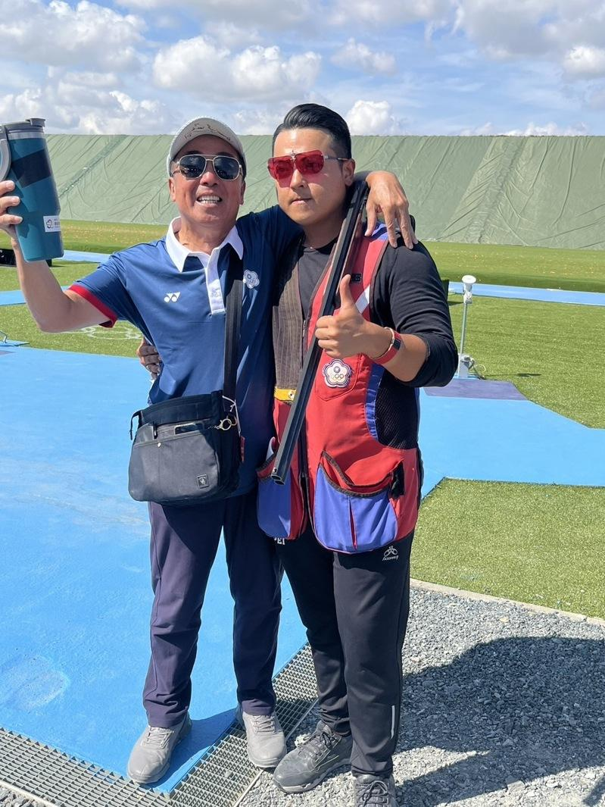

中华射击队29岁好手李孟远夺下男子定向飞靶赛铜牌，不但是中华代表团在巴黎奥运首面奖牌，也是史上首次在奥运射击赛开张，李孟远赛后特别感谢身兼教练的父亲谢志培，他说：「谢谢爸爸，从头到都很辛苦，陪我跑来跑去，中间压力大还有点发脾气，他都接受下来。」
影片来源：联合新闻网
李孟远在资格赛以124分追平奥运纪录，进入决赛后只输两名美国选手，金牌得主汉考克（Vincent Hancock）更是自己崇拜的偶像，能够和他同场竞争是想都没想过的事。
我国拳坛史上首面奥运奖牌到手，李孟远感谢国训中心、体育署、射击协会，也谢谢整个团队让他无后顾之忧。他说：「感谢非常多人支持，自己属于平常、普通家庭，打得起这项运动，一路上靠很多人帮忙。」
李孟远表示，决赛从头到尾撑得很辛苦，从未遇过张力这么大的比赛，完全没有技术可言，都用意志力下去打，和前两名的实力确实是有差一点，回去后更努力加强，让整体成绩再起来。
巴黎奥运热话题一岁半开始上中文学校 虎妈养出金牌奥运击剑手男足8强法国淘汰阿根廷引发混战 导火线2年前埋下法国泳坛新星马向本届拥4金：这是完美一周台拳后林郁婷外型遭记者议论 华邮专栏作家叹：已成猎巫行动8月3日赛程 美国男篮对上波多黎各、三组「中国内战」你帮谁加油？

中华射击队好手李孟远（右）夺下男子定向飞靶赛铜牌，特别感谢父亲谢志培。（体育署提供）
中华射击队29岁好手李孟远夺下男子定向飞靶赛铜牌，不但是中华代表团在巴黎奥运首面奖牌，也是史上首次在奥运射击赛开张，李孟远赛后特别感谢身兼教练的父亲谢志培，他说：「谢谢爸爸，从头到都很辛苦，陪我跑来跑去，中间压力大还有点发脾气，他都接受下来。」
影片来源：联合新闻网
李孟远在资格赛以124分追平奥运纪录，进入决赛后只输两名美国选手，金牌得主汉考克（Vincent Hancock）更是自己崇拜的偶像，能够和他同场竞争是想都没想过的事。
我国拳坛史上首面奥运奖牌到手，李孟远感谢国训中心、体育署、射击协会，也谢谢整个团队让他无后顾之忧。他说：「感谢非常多人支持，自己属于平常、普通家庭，打得起这项运动，一路上靠很多人帮忙。」
李孟远表示，决赛从头到尾撑得很辛苦，从未遇过张力这么大的比赛，完全没有技术可言，都用意志力下去打，和前两名的实力确实是有差一点，回去后更努力加强，让整体成绩再起来。
巴黎奥运热话题
- 一岁半开始上中文学校 虎妈养出金牌奥运击剑手
- 男足8强法国淘汰阿根廷引发混战 导火线2年前埋下
- 法国泳坛新星马向本届拥4金：这是完美一周
- 台拳后林郁婷外型遭记者议论 华邮专栏作家叹：已成猎巫行动
- 8月3日赛程 美国男篮对上波多黎各、三组「中国内战」你帮谁加油？